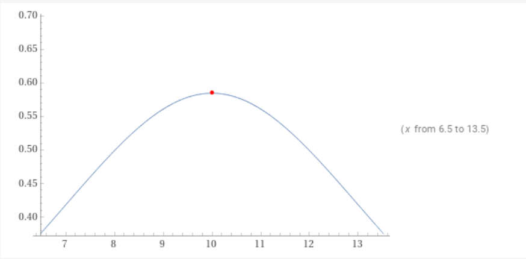
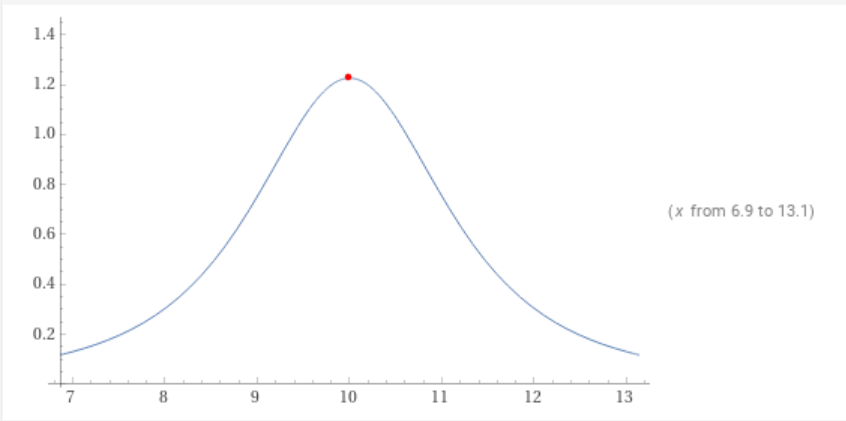

3. Bathymetry & Boundary Conditions | Project Report
Introduction of Bathymetry through non-zero source term
Introduced the bathymetry through calculation of \(\Delta x \Psi_{i-1/2}\) into the FWave solver.
\(\Delta x \Psi_{i-1/2} := \begin{bmatrix} 0 \\ -g (b_r - b_l) \frac{h_l+h_r}{2} \end{bmatrix}\) :
void FWave::computedxPsi(real in_stateLeft[3], real in_stateRight[3], real out_dxPsi) {
real heightLeft = in_stateLeft[0]
real heightRight = in_stateRight[0]
real bathymetryLeft = in_stateLeft[2];
real bathymetryRight = in_stateRight[2];
// -g * bathymetryRight - bathymetryLeft * heightLeft + heightRight / 2
out_dxPsi = (-const_g * (bathymetryRight - bathymetryLeft) * ((heightLeft + heightRight) / 2))
}
\(\Delta f - \Delta x \Psi_{i-1/2}\) :
void FWave::computeEigencoefficients(real in_stateLeft[3], real in_stateRight[3], real in_invertedEigenmatrix[2][2], real out_eigencoefficients[2]) {
real fluxJumpLeft[2];
real fluxJumpRight[2];
real dxPsi;
flux(in_stateLeft, fluxJumpLeft);
flux(in_stateRight, fluxJumpRight);
computedxPsi(in_stateLeft, in_stateRight, dxPsi);
real fluxJump[2] = {
fluxJumpRight[0] - fluxJumpLeft[0],
fluxJumpRight[1] - fluxJumpLeft[1] - dxPsi
};
out_eigencoefficients[0] = in_invertedEigenmatrix[0][0] * fluxJump[0] + in_invertedEigenmatrix[0][1] * fluxJump[1];
out_eigencoefficients[1] = in_invertedEigenmatrix[1][0] * fluxJump[0] + in_invertedEigenmatrix[1][1] * fluxJump[1];
}
Example of bathymetry in extended solver
Example visualization of the new bathymetry feature in the FWave solver.
Reflecting Boundary Conditions
Implemented open and reflecting boundary conditions in the setGhostOutflow function:
void WavePropagation1d::setGhostOutflow( Boundary boundary[2] ) {
real * heightLocal = height[step];
real * momentumLocal = momentum[step];
real * bathymetryLocal = bathymetry;
// set left boundary
if(boundary[0] == OUTFLOW) {
heightLocal[0] = heightLocal[1];
momentumLocal[0] = momentumLocal[1];
bathymetryLocal[0] = bathymetryLocal[1];
} else if (boundary[0] == REFLECTING) {
heightLocal[0] = 0;
momentumLocal[0] = 0;
bathymetryLocal[0] = heightLocal[1]+bathymetryLocal[1]+1;
}
// set right boundary
if(boundary[1] == OUTFLOW) {
heightLocal[cellCount+1] = heightLocal[cellCount];
momentumLocal[cellCount+1] = momentumLocal[cellCount];
bathymetryLocal[cellCount+1] = bathymetryLocal[cellCount];
} else if(boundary[1] == REFLECTING) {
heightLocal[cellCount+1] = 0;
momentumLocal[cellCount+1] = 0;
bathymetryLocal[cellCount+1] = heightLocal[cellCount]+bathymetryLocal[cellCount]+1;
}
Therefore changed the main() command line input:
// boundary conditions
std::string boundaryLeftArg = in_argv[4];
std::string boundaryRightArg = in_argv[5];
tsunami_lab::Boundary boundary[2];
if (boundaryLeftArg == "OUTFLOW") {
boundary[0] = tsunami_lab::OUTFLOW;
} else if (boundaryLeftArg == "REFLECTING") {
boundary[0] = tsunami_lab::REFLECTING;
} else {
std::cerr << "invalid boundary type for Left side. Please use either OUTFLOW or REFLECTING"
<< std::endl;
return EXIT_FAILURE;
}
if (boundaryRightArg == "OUTFLOW") {
boundary[1] = tsunami_lab::OUTFLOW;
} else if (boundaryRightArg == "REFLECTING") {
boundary[1] = tsunami_lab::REFLECTING;
} else {
std::cerr << "invalid boundary type for Right side. Please use either OUTFLOW or REFLECTING"
<< std::endl;
return EXIT_FAILURE;
}
Shock-Shock Problem with Boundary Conditions
The Boundary Conditions for Reflection does not seem to work at the moment, therefore we couldn’t compare the output to the one with normal conditions.
Hydraulic Jumps
Computation of the Froude number
Computation of the maximum Froude number at inital time \(t = 0\).
subcritical setting:
\(\text{max(F) achieved at x = 10}\)
{kind=link}
supercritical setting:
\(\text{max(F) achieved at x = 10}\)
{kind=link}
Implementation of Sub- / Supercritical Flow Setups
Implemented subcritical flow setup based on dambreak setup and the given values on the website.
tsunami_lab::t_real tsunami_lab::setups::Subcritical1d::getHeight(t_real i_x,
t_real) const
{
if (x >= 0 && x <= 25){
return -getBathymetry;
}
}
tsunami_lab::t_real tsunami_lab::setups::Subcritical1d::getMomentumX(t_real i_x,
t_real) const
{
if (x >= 0 && x <= 25){
return 4.42;
}
}
tsunami_lab::t_real tsunami_lab::setups::Subcritical1d::getMomentumY(t_real,
t_real) const
{
return 0;
}
tsunami_lab::t_real tsunami_lab::setups::Subcritical1d::getBathymetry(t_real in_x,
t_real) const
{
if (x > 8 && x < 12){
return (-1.8 - 0.05 * (x - 10)^2);
}
else {
return -2;
}
}
Implemented supercritical flow setup based on subcritical setup and the given values on the website.
tsunami_lab::t_real tsunami_lab::setups::Supercritical1d::getHeight(t_real i_x,
t_real) const
{
if (x >= 0 && x <= 25){
return -getBathymetry;
}
}
tsunami_lab::t_real tsunami_lab::setups::Supercritical1d::getMomentumX(t_real i_x,
t_real) const
{
if (x >= 0 && x <= 25){
return 0.18;
}
}
tsunami_lab::t_real tsunami_lab::setups::Supercritical1d::getMomentumY(t_real,
t_real) const
{
return 0;
}
tsunami_lab::t_real tsunami_lab::setups::Supercritical1d::getBathymetry(t_real in_x,
t_real) const
{
if (x > 8 && x < 12){
return (-0.13 - 0.05 * (x - 10)^2);
}
else {
return -0.33;
}
}
Individual Member Contributions
Marek Sommerfeld: implementation of boundary conditions and bathymetry
Moritz Rätz: extended FWave solver, project report